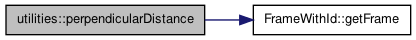

Some commonly used routines. More...
Functions | |
| home alexey workspace BRICS_RN navigation_trajectory_common include navigation_trajectory_common Utilities h double | perpendicularDistance (const FrameWithId &point, const FrameWithId &linePoint1, const FrameWithId &linePoint2) |
| Calculates and returns perpendicular distance form the given point to the line (for 2D space) | |
| void | prunePath (const std::vector< FrameWithId > &path, const FrameWithId &point, std::vector< FrameWithId > &prunedPath) |
| Calculates pruned path, builds perpendiculars to the original path, takes the shortest perpendicular as a trimming line, trims the path, insert the point argument as a new starting point of the path (for 2D space). | |
Detailed Description
Some commonly used routines.
Function Documentation
| home alexey workspace BRICS_RN navigation_trajectory_common include navigation_trajectory_common Utilities h double utilities::perpendicularDistance | ( | const FrameWithId & | point, |
| const FrameWithId & | linePoint1, | ||
| const FrameWithId & | linePoint2 | ||
| ) | [inline] |
Calculates and returns perpendicular distance form the given point to the line (for 2D space)
- Parameters:
-
[in] point - FrameWithId coordinates of the point. [in] linePoint1 - FrameWithId 1st coordinate of the line. [in] linePoint2 - FrameWithId 2nd coordinate of the line.
Definition at line 61 of file Utilities.h.
References FrameWithId::getFrame().
Referenced by DouglasPeuckerApproximation::douglasPeucker(), and prunePath().
Here is the call graph for this function:

| void utilities::prunePath | ( | const std::vector< FrameWithId > & | path, |
| const FrameWithId & | point, | ||
| std::vector< FrameWithId > & | prunedPath | ||
| ) | [inline] |
Calculates pruned path, builds perpendiculars to the original path, takes the shortest perpendicular as a trimming line, trims the path, insert the point argument as a new starting point of the path (for 2D space).
- Parameters:
-
[in] path - std::vector<FrameWithId> original path, a vector of FrameWithId. [in] point - FrameWithId trimming point. [out] prunedPath - std::vector<FrameWithId> resulting pruned path.
Definition at line 89 of file Utilities.h.
References path, and perpendicularDistance().
Referenced by CollisionCheckingRos::collisionCheck().
Here is the call graph for this function: